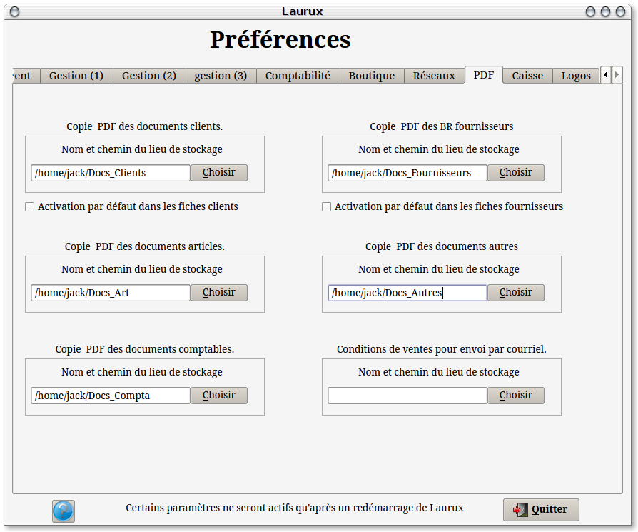
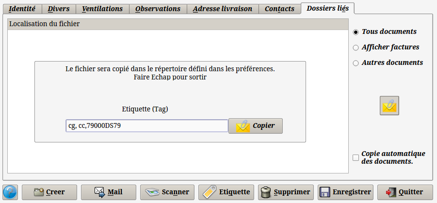
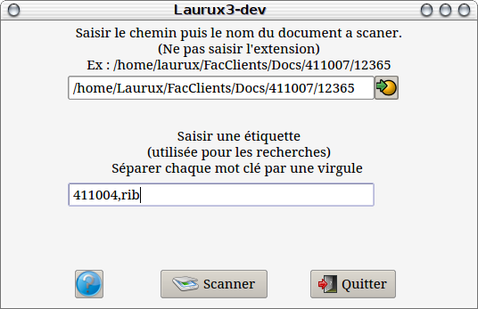
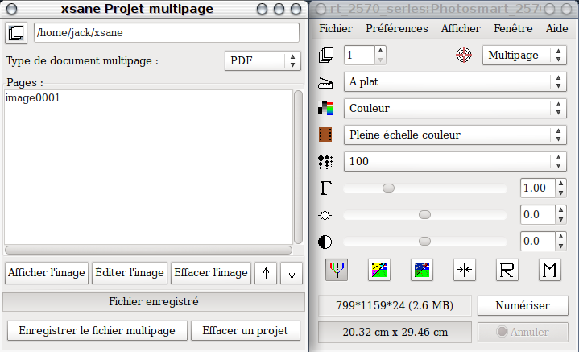
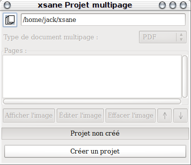
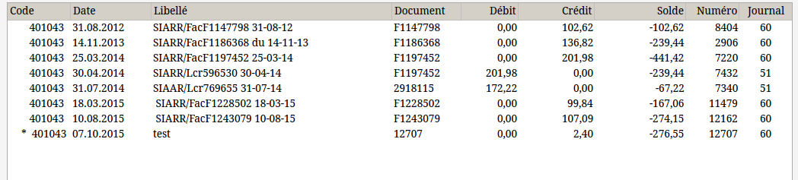
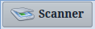
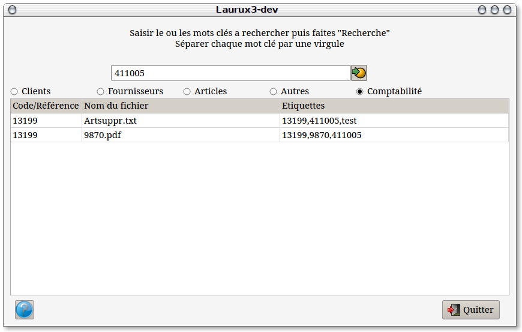

GED Gestion électronique des documents .
----------------------------------------------------------------------------------------------------------------------
La Gestion
Électronique des Documents ou GED désigne un procédé informatisé
visant à organiser et gérer des informations et des documents
électroniques au sein d'une organisation. Il met principalement en
oeuvre des systèmes d'acquisition, de classement, de stockage,
d'archivage des documents (exemple d’utilisation : la numérisation de
documents papiers). La GED participe aux processus de travail
collaboratif, de capitalisation et d'échanges d'informations. C'est un
processus de finalité qui découle du cycle de vie du document. La GED
peut permettre un gain de temps et d'argent énorme pour les
organisations. En effet, elle permet l'indexation des documents et
surtout la numérisation qui comprime le « volume papier ».
Il existe 4 étapes majeures dans la gestion
électronique des
documents : acquisition, traitement, stockage et diffusion.
1- Préalable.
La GED, pour fonctionner correctement nécessite de
renseigner certains paramètres dans les préférences (onglet PDF).
Ces paramètres concernent les lieux de stockage des fichiers. Prenez
soin de bien définir le nom des répertoires utilisés et de ne pas
utiliser d'espace ni de caractères exotiques ( tel que &#%$ etc...)
Toutes les opérations de scan se font à l'aide du
logiciel Xsane, il
faut donc procéder à son installation puis à son paramétrage initial
(voir plus loin).
Pour installer Xsane, dans un terminal taper :
sudo apt-get install xsane

2- La génération des PDF et l'acquisition des documents.
L'acquisition des documents peut se faire
manuellement ou automatiquement.
A- Génération
automatique
Laurux propose plusieurs
acquisitions automatiques. En impression des documents clients et en
impression des documents fournisseurs (commandes et bons de réception).
Le logiciel, va stocker le document PDF généré lors de l'impression
dans un sous-répertoire nommé "Facs"
situé dans le répertoire défini dans les préférences.
Pour
activer cette fonction d'archivage il faut cocher l'option ad hoc dans
les fiches clients et fournisseurs.
B- Acquisition manuelle
Il y a deux possibilités
d'acquisition manuelle.
1- Pour un
document existant
L'acquisition manuelle peut se
faire a partir des fiches clients, fournisseurs et articles à l'aide
d'un bouton situé dans l'onglet "Documents
liés" . Cette acquisition se fait a partir d'un document
existant sur un support numérique (disque dur, cle USB etc...)
La nature du fichier n'a pas
d'importance. On peut archiver du PDF, du png, du tiff, du txt etc...

Avant de lancer la recherche d'un
document a archiver, le programme offre la possibilité de saisir des
étiquettes (Tag). Chaque étiquette est séparée par une virgule. Dans
notre exemple on utilise cg pour carte grise, cc pour camping car puis
on saisit l'immatriculation.
Lorsque la saisie des étiquettes est
faite alors on lance la recherche en cliquant sur le bouton "Copier".
NB : Le programme affectera
automatiquement le code client (ou fournisseur, ou article) dans les
étiquettes.
Tout document généré de cette façon
sera stocké dans un sous-répertoire nommé "Docs"
situé dans le répertoire défini dans les préférences.
2- Pour un
document inexistant
Pour scanner un document
inexistant et stocker le PDF dans la fiche idoine on lancera le
programme d'acquisition situé sous "Gestion
==> GED ==> Acquisition ou alors directement a partir des fiches
clients, fournisseurs ou produits ou bien encore a partir de la saisie
des écritures en comptabilité.

On saisira en premier le lieu précis ou
le fichier scanné sera copié. Attention, le dossier de
destination doit obligatoirement exister. De plus il doit correspondre
au répertoire défini dans les préférences.
Comme indiqué sur l'écran, on saisit le
nom du fichier sans l'extension. Puis on saisira les étiquettes.
Veillez a bien saisir le code client (ou fournisseur ou article) si
vous n' êtes pas passé par une fiche, car ce
code sera utilisé pour la mise à jour de la base mais aussi il pourra
servir pour les recherches de documents. Si vous lancer le scan a
partir d'une fiche (client, fournisseur ou article) alors il n'est pas
nécessaire de saisir le code car le programme le mettra
automatiquement dans l'étiquette.
Ces données étant saisies on pourra
cliquer sur le bouton "Scanner" ce
qui ouvrira le logiciel "Xsane"

Xsane étant lancé, on s'assurera que
dans la page de droite on aura bien Multipage de sélectionné. On
sélectionnera aussi la résolution du scan. 100 DPI étant une définition
correcte qui produit un fichier relativement leger.
Dans la page de gauche on veillera
impérativement a saisir un nom de fichier = xsane (sous le repertoire
utilisateur) car ce nom sera utilisé par la suite par Laurux et a
mettre le type du document multipage en PDF.
Lorsqu'on est prêt a scanner on
cliquera sur le bouton "Numériser"de
la page de droite. A la fin du scan on cliquera sur le bouton "Enregistrer le fichier multipage" sur la
page de gauche puis on fermera Xsane pour revenir sous Laurux.
Si on a plusieurs pages a réunir dans
un même document PDF, on scannera l'ensemble des pages puis on
enregistrera le fichier multipage.
Lors de la première utilisation
le repertoire de travail xsane (/home/xx/xsane, xx étant le repertoire
utilisateur) n'existe pas et on aura donc la fenêtre suivante

Il faudra cliquer sur le bouton "Créer un projet" avant de pouvoir scanner.
Tout document généré de cette façon
sera stocké dans un sous-répertoire nommé "Docs"
situé dans le répertoire défini dans les préférences.
NB: Xsane enregistre ses paramètres de
travail à la fermeture.
3- La génération automatique.
Comme dit ailleurs dans la documentation, le
logiciel génère automatiquement un fichier PDF pour les clients à
l'impression d'une facture et pour les fournisseurs à la validation
d'un BR dans la mesure ou les comptes utilisés ont bien le bouton "Copie automatique des documents"
coché dans leur fiche. Cette opération va aussi ajouter un lien dans
l'écriture comptable générée et on pourra donc, en comptabilité,
afficher le document en visualisation des extraits de compte.
Les comptes possédant un document lié auront
une étoile (*) devant leur code.

Pour ouvrir le document il faudra faire un clic
droit sur la ligne ayant l'étoile.
Rappel : Pour modifier une ligne, il faut faire un
double clic.
4- La gestion des documents liés aux écritures de comptabilité.
Nous avons vu plus haut, en acquisition manuelle,
qu'il était possible de lié un documents pdf à une écriture de
comptabilité.
Voici comment procéder.
Dans les programmes de saisie des écritures on
commence généralement par la saisie du compte tiers. Le compte tiers
étant saisit on cliquera sur le bouton 
le programme demandera si on souhaite copier un document existant ou si
on souhaite en scanner un nouveau. La première option permettra la
récupération d'un document existant sur un support quelconque et la
seconde ouvrira le module de la GED permettant de saisir le nom du
fichier a scanner ainsi que les étiquettes. Laurux va renseigner
automatiquement trois étiquettes, le numéro de l'écriture, le compte
tiers et, si on saisit une
écriture de trésorerie, le compte banque. Attention, ces étiquettes ne
sont pas visibles. A vous de saisir ensuite vos propres étiquettes
utiles pour des recherches futures.
Ensuite, en extrait de compte, toute écriture ayant
un document lié aura une étoile (*) en début de ligne. Il faudra faire
un clic droit sur la ligne concernée poiur ouvrir le ou les documents
liés à l'écriture.
NB : On peut saisir plusieurs documents pour une
même écriture.
5- L'Organisation des dossiers.
Il est donc possible de gérer les documents pour les
clients, les fournisseurs, les articles, les écritures de comptabilité
et même les documents externes à Laurux (ceux qu'on nomme "Autres")
mais qu'en est-il de l'organisation des dossiers ?
Voilà comment s'articulent les dossiers de la GED.
A- Clients.
Repertoire défini dans les préférences
| 411xxx
| Docs ==> Tout document scanné ou
copié a partir des fiches clients ou de la GED.
|
Facs ==> Tout document généré par la facturation.
B- Fournisseurs.
Repertoire défini dans les préférences
| 401xxx
|
Docs ==> Tout document copié ou scanné a partir des fiches
fournisseurs ou de la GED, toute commande.
| BR ==> Les bons de réception
généré
par la validation des BR.
| FAC ==> Les factures fournisseurs
scannées lors de la validation des BR.
C- Articles.
Repertoire défini dans les préférences
| Docs ==> Tout document copié ou scanné a partir
des fiches articles ou de la GED
D- Comptabilité.
Repertoire défini dans les préférences
| AAAA
| 401xxx ==> Tout
document scanné ou copié lors d'une saisie d'écriture pour un
fournisseur.
| 411xxx
==> Tout
document scanné ou copié lors d'une saisie d'écriture pour un client.
NB : AAAA représente l'année en cours.
E- Autres.
Repertoire défini dans les préférences
| XXXXX ==> Tout document scanné a partir
de la GED
NB : Les répertoires des documents
"Autres" étant libres XXXXX représente le répertoire saisit par
l'utilisateur.
6- Les recherches
Dans le menu de la GED Laurux offre une option de
recherche qui va permettre les recherches de documents et
éventuellement la suppression de liens ou de fichiers.

En premier lieu on saisira l'étiquette
a rechercher puis on cochera le type de recherche a faire. Dans notre
exemple la recherche des écritures ayant des liens avec le compte
411005 affiche deux lignes pour l'écriture 13199. On aurait pu faire la
recherche sur l'écriture 13199 et on aurait eu le même résultat.
Pour supprimer un lien, on sélectionne
la ligne a supprimer et on fait "Suppr".
Le lien étant supprimé le programme demandera si on souhaite effacer le
fichier.
----------------------------------------------------------------------------------------------------------------------
retour en haut de
la page
Index de Laurux